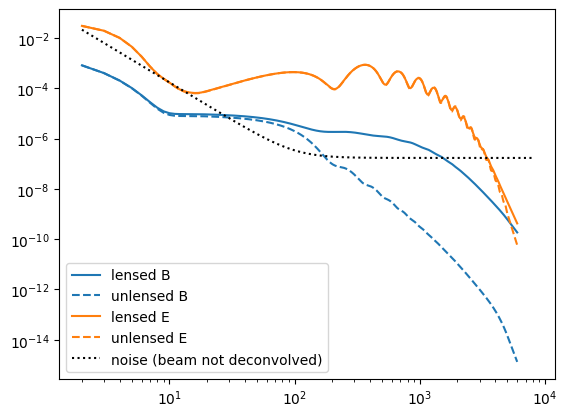
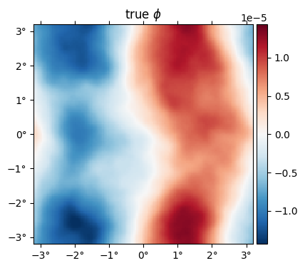
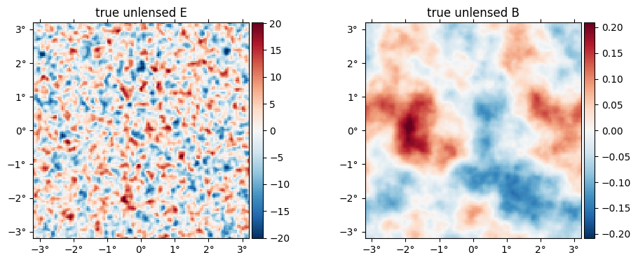
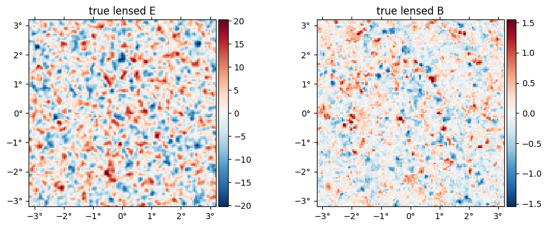
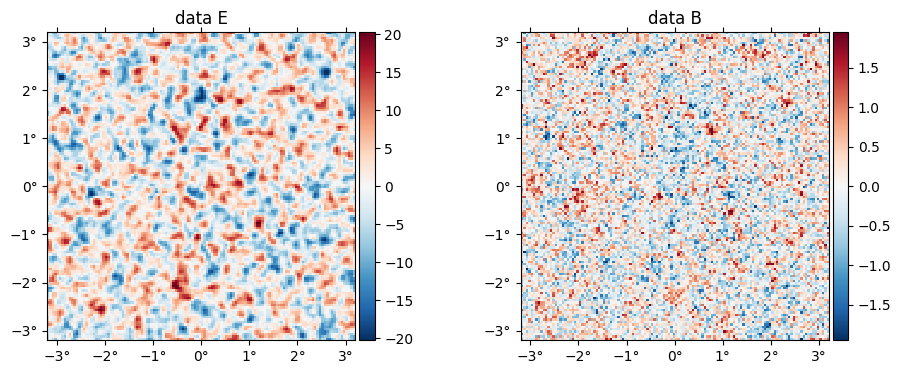
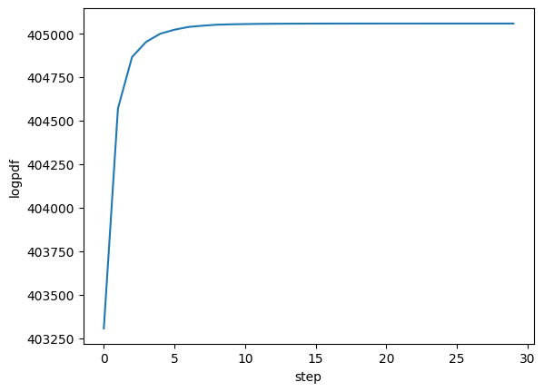
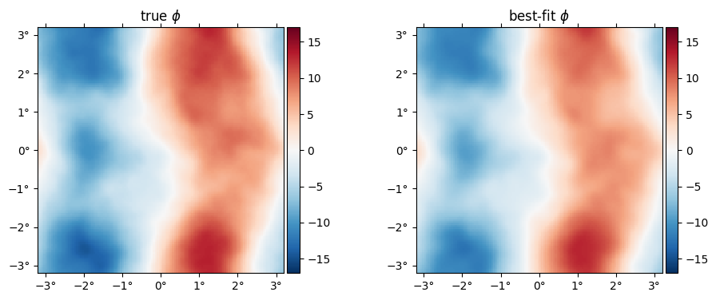
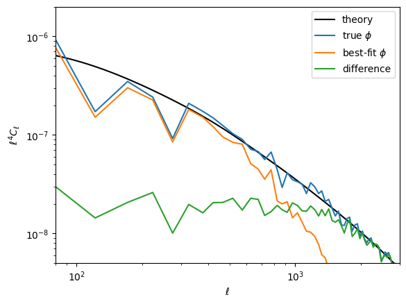
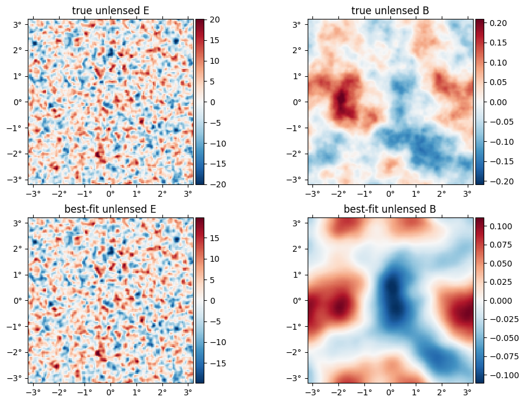
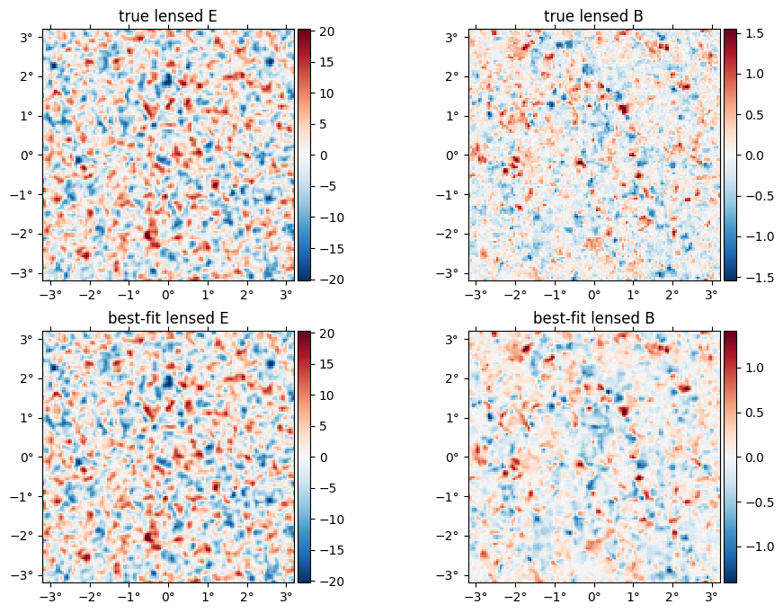

MAP estimation
Here, we give an example of how to compute the joint maximum a posteriori (MAP) estimate of the CMB temperature and polarization fields, $f$, and the lensing potential, $\phi$.
using CMBLensing, PyPlotCompute spectra
First, we compute the fiducial CMB power spectra which generate our simulated data,
Cℓ = camb(r=0.05);Next, we chose the noise power-spectra:
Cℓn = noiseCℓs(μKarcminT=1, ℓknee=100);Plot these up for reference,
loglog(Cℓ.total.BB,c="C0")
loglog(Cℓ.unlensed_total.BB,"--",c="C0")
loglog(Cℓ.total.EE,c="C1")
loglog(Cℓ.unlensed_total.EE,"--",c="C1")
loglog(Cℓn.BB,"k:")
legend(["lensed B","unlensed B","lensed E","unlensed E", "noise (beam not deconvolved)"]);
Configure the type of data
These describe the setup of the simulated data we are going to work with (and can be changed in this notebook),
θpix = 3 # pixel size in arcmin
Nside = 128 # number of pixels per side in the map
pol = :P # type of data to use (can be :T, :P, or :TP)
T = Float32 # data type (Float32 is ~2 as fast as Float64);Generate simulated data
With these defined, the following generates the simulated data and returns the true unlensed and lensed CMB fields, f and f̃ ,and the true lensing potential, ϕ, as well as a number of other quantities stored in the "DataSet" object ds.
@unpack f, f̃, ϕ, ds = load_sim(
seed = 3,
Cℓ = Cℓ,
Cℓn = Cℓn,
θpix = θpix,
T = T,
Nside = Nside,
pol = pol,
)
@unpack Cf, Cϕ = ds;Examine simulated data
The true $\phi$ map,
plot(ϕ, title = raw"true $\phi$");
The "true" unlensed field, $f$,
plot(f, title = "true unlensed " .* ["E" "B"]);
And the "true" lensed field,
plot(LenseFlow(ϕ)*f, title = "true lensed " .* ["E" "B"]);
The data (stored in the ds object) is basically f̃ with a beam applied plus a sample of the noise,
plot(ds.d, title = "data " .* ["E" "B"]);
Run the optimizer
Now we compute the maximum of the joint posterior, $\mathcal{P}\big(f, \phi \,\big|\,d\big)$
fJ, ϕJ, history = MAP_joint(ds, nsteps=30, progress=true);MAP_joint: 100%|████████████████████████████████████████| Time: 0:01:41
step: 30
logpdf: 405058.62
α: 0.036326826
CG: 2 iterations
Linesearch: 12 bisectionsExamine results
The history variable gives some info about the run, and more info can be saved by passing history_keys argument to MAP_joint. By default, we get just the value of the posterior, which we can use to check the maximizer has asymptoted to a maximum value:
plot(getindex.(history, :logpdf))
xlabel("step")
ylabel("logpdf");
Here's the best-fit $\phi$ relative to the truth,
plot(10^6*[ϕ ϕJ], title=["true" "best-fit"] .* raw" $\phi$", vlim=17);
Here is the difference in terms of the power spectra. Note the best-fit has high-$\ell$ power suppressed, like a Wiener filter solution (in fact what we're doing here is akin to a non-linear Wiener filter). In the high S/N region ($\ell\lesssim1000$), the difference is approixmately equal to the noise, which you can see is almost two orders of magnitude below the signal.
loglog(ℓ⁴ * Cℓ.total.ϕϕ, "k")
loglog(get_ℓ⁴Cℓ(ϕ))
loglog(get_ℓ⁴Cℓ(ϕJ))
loglog(get_ℓ⁴Cℓ(ϕJ-ϕ))
xlim(80,3000)
ylim(5e-9,2e-6)
legend(["theory",raw"true $\phi$", raw"best-fit $\phi$", "difference"])
xlabel(raw"$\ell$")
ylabel(raw"$\ell^4 C_\ell$");
The best-fit unlensed fields relative to truth,
plot([f,fJ], title = ["true", "best-fit"] .* " unlensed " .* ["E" "B"]);
The best-fit lensed field (bottom row) relative to truth (top row),
plot([f̃, LenseFlow(ϕJ)*fJ], title = ["true", "best-fit"] .* " lensed " .* ["E" "B"]);